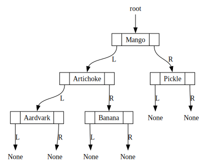

When we were working with LinkedLists, we could access all items by just “looping through”, from one element to the next, printing as we go along.
But… for a BST, our structure can now branch as we traverse it… How do we “loop through” a BST?
Two fundamentally different ways to traverse every node
“Opposites” of each other, so that one is often extremely efficient and the other extremely inefficient for a given task
Your job as a data scientist is to think carefully about which one is more efficient for a given goal!
Two Ways to Traverse: IRL Version
Imagine we’re trying to learn about a topic \(\tau\) using Wikipedia, so we find its article \(\tau_0\)
There are two “extremes” in terms of strategies we could follow for learning, given the contents of the article as well as the links it contains to other articles
Note Depth-First Search (DFS)
Open \(\tau_0\) and start reading; When we encounter a link we always click it, immediately start reading the new article.
If we hit an article with no links (or a dead end/broken link), we finish reading it and click the back button, picking up where we left off in the previous article. When we reach the end of \(\tau_0\), we’re done!
Note Breadth-First Search (BFS)
Bookmark \(\tau_0\) in a folder called “Level 0 Articles”; open and start reading it
When we encounter a link, we put it in a “Level 1 Articles” folder, but continue reading \(\tau_0\) until we reach the end.
We then open all “Level 1 Articles” in new tabs, placing links we encounter in these articles into a “Level 2 Articles” folder, that we only start reading once all “Level 1 Articles” are read
We continue like this, reading “Level 3 Articles” once we’re done with “Level 2 Articles”, “Level 4 Articles” once we’re done with “Level 3 Articles”, and so on. (Can you see a sense in which this is the “opposite” of DFS?)
Warning: node None_0, port f1 unrecognized
Warning: node None_1, port f1 unrecognized
Warning: node None_2, port f1 unrecognized
Warning: node None_3, port f1 unrecognized
Warning: node None_4, port f1 unrecognized
Warning: node None_5, port f1 unrecognized

Code
from hw2 import IterAlgorithm, NodeProcessorprint("DFS:")dfs_processor = NodeProcessor(IterAlgorithm.DEPTH_FIRST)#print(type(dfs_processor.node_container))dfs_processor.iterate_over(bst)print("\nBFS:")bfs_processor = NodeProcessor(IterAlgorithm.BREADTH_FIRST)#print(type(bfs_processor.node_container))bfs_processor.iterate_over(bst)
Depth-First Search (DFS): With this approach, we iterate through the BST by always taking the left child as the “next” child until we hit a leaf node (which means, we cannot follow this left-child pointer any longer, since a leaf node does not have a left child or a right child!), and only at that point do we back up and take the right children we skipped.
Breadth-First Search (BFS): This is the “opposite” of DFS in the sense that we traverse the tree level-by-level, never moving to the next level of the tree until we’re sure that we have visited every node on the current level.
Now that you have some intuition, you may be thinking that they might require very different code to implement ü§î
This is where mathematically-formal link between the two becomes ultra helpful!
It turns out (and a full-on algorithmic theory course makes you prove) that
Depth-First Search can be accomplished by processing nodes in an order determined by adding each to a stack, while
Breadth-First Search can be accomplished by processing nodes in an order determined by adding each to a queue!
\(\implies\) Literally identical code, “pulling out” the word stack and replacing it with the word queue within your code (or vice-versa).
Put your Software Engineer Hat on: this calls for an abstraction layer!
(OOP hint: Notice how we‚Äôre not teaching you how Queue and Stack work, and not asking you to implement it ü§®)
Two Ways to Traverse: HW3 Version
You’ll make a class called NodeProcessor, with a singleiterate_over(tree) function
This function—without any changes in the code or even any if statements!—will be capable of both DFS and BFS
That‚Äôs a hint: lose points if there‚Äôs an if statement! üëÄ (bc, the whole point of OOP! Encapsulation, abstraction)
Constructor takes in a ThingContainer (could be a stack or a queue, you won’t know which), with two functions:
put_new_thing_in(new_thing)
take_existing_thing_out()
ThingContainer: The OOP Structure You See
Secret Full OOP Structure You Don’t See
One Animal in the BFS Species
For this and next slide, constant-time preliminary step: “Add root to container” (a ThingContainer object)
Procedure
Algorithm
Breadth-First Search
while [container not empty]: 1. Take thing out 2. Print thing content 3. Add left child to container 4. Add right child to container
Three Animals in the DFS Species
DFS Procedure
Algorithm
Pre-Order Traversal
1. Print node 2. DFS left subtree 3. DFS right subtree
In-Order Traversal üßê‚ĺÔ∏è
1. DFS left subtree 2. Print node 3. DFS right subtree
Post-Order Traversal
1. DFS left subtree 2. DFS right subtree 3. Print node
The Three Animals Traverse our Inventory Tree
Code
visualize(bst)
Warning: node None_0, port f1 unrecognized
Warning: node None_1, port f1 unrecognized
Warning: node None_2, port f1 unrecognized
Warning: node None_3, port f1 unrecognized
Warning: node None_4, port f1 unrecognized
Warning: node None_5, port f1 unrecognized
Final Notes for Homework 3
More Memory, More Performance
The last part challenges you to ask: why stop at a hash based on just the first letter of the key?
We could just as easily use the first two letters:
h('AA') = 0, h('AB') = 1, …, h('AZ') = 25,
h('BA') = 26, h('BB') = 27, …, h('BZ') = 51,
h('CA') = 52, …, h('ZZ') = 675.
You will see how this gets us even closer to the elusive \(O(1)\)! And we could get even closer with three letters, four letters, ‚Ķ ü§îü§îü§î
AlphaHasher vs. CustomHasher
# @title define-alpha-hasherfrom abc import ABC, abstractmethodimport stringclass CustomHasher(ABC):@abstractmethoddef__init__(self):pass@abstractmethoddef get_alphabet_size(self):pass@abstractmethoddefhash(self, str_to_hash: str) ->int:pass@abstractmethoddef compute_position_in_alphabet(self, uppercase_key: str) ->int:pass@abstractmethoddef compute_key_for_index(self, index: int) ->str:passclass AlphaHasher(CustomHasher):def__init__(self):self.alphabet_size =26def get_alphabet_size(self):returnself.alphabet_sizedefhash(self, str_to_hash: str) ->int:iflen(str_to_hash) ==0: first_letter ='A'else: first_letter = str_to_hash.upper()[0]# And return its index in the alphabet:# 'A' has index 0, 'B' has index 1, etc.returnself.compute_position_in_alphabet(first_letter)def compute_position_in_alphabet(self, uppercase_key: str) ->int:return string.ascii_uppercase.index(uppercase_key)def compute_key_for_index(self, index: int) ->str:return string.ascii_uppercase[index]
LinkedList via PolymorphicNode
EmptyNode\(\rightarrow\)ContentNode
# @title define-linked-listfrom abc import ABC, abstractmethodclass LinkedList:def__init__(self):self.root = EmptyNode()def append(self, item):self.root =self.root.append(item)def find_item_steps(self, item):returnself.root.find_item_steps(item)def to_string(self, recurse: bool):returnf'LinkedList[{self.root.to_string(recurse)}]'def__repr__(self):returnself.to_string(recurse=True)def__str__(self):returnself.to_string(recurse=False)class PolymorphicNode(ABC):@abstractmethoddef__init__(self):pass@abstractmethoddef append(self, item):pass@abstractmethoddef find_item_steps(self, item):pass@abstractmethoddef to_string(self, recurse: bool):passdef__repr__(self):returnself.to_string(recurse=True)def__str__(self):returnself.to_string(recurse=False)class EmptyNode(PolymorphicNode):def__init__(self):super().__init__()def append(self, item):""" This is the only weird part of EmptyNode: because we want to utilize *polymorphism*, when append() is called on an EmptyNode it is "transformed into" a FilledNode! That is why, in the LinkedList's append() function, we have self.root = self.root.append(), and why the FilledNode's append() function works the same way """#print("EmptyLinkedListNode.append()") new_form = ContentNode(item)return new_formdef find_item_steps(self, item):return np.infdef__len__(self):return0def to_string(self, recurse: bool):return''class ContentNode(PolymorphicNode):def__init__(self, content_arg):super().__init__()self.content = content_argself.next= EmptyNode()def append(self, item):self.next=self.next.append(item)# Return just *self*, since we *haven't* transformed the type of# FilledLinkedListNode by appending another element to itreturnselfdef find_item_steps(self, item):ifself.content == item orself.content[0] == item:return1return1+self.next.find_item_steps(item)def get_content(self):returnself.contentdef__len__(self):return1+len(self.next)def to_string(self, recurse: bool): content_str =f'ContentNode[{str(self.get_content())}] 'ifnot recurse:return content_str next_str =str(self.next)returnf'{content_str}{self.next.to_string(recurse)}'
# @title define-alpha-hasher-2class AlphaHasher2(CustomHasher):def__init__(self):self.alphabet_size =26*26def get_alphabet_size(self):returnself.alphabet_sizedefhash(self, str_to_hash: str) ->int:iflen(str_to_hash) ==0: first_two_letters ='AA'eliflen(str_to_hash) ==1: first_letter = str_to_hash.upper()[0] second_letter ='A'else: first_letter = str_to_hash.upper()[0] second_letter = str_to_hash.upper()[1]#print(f'First two letters for {str_to_hash}: {first_letter}{second_letter}')# And return its index:# 'AA' has index 0, 'AB' has index 1, etc. first_letter_pos = AlphaHasher2.compute_position_in_alphabet(first_letter) second_letter_pos = AlphaHasher2.compute_position_in_alphabet(second_letter)# The position in the two-letter alphabet is just 26*first + second final_pos =26* first_letter_pos + second_letter_posreturn final_posdef compute_position_in_alphabet(self, uppercase_key: str) ->int:if uppercase_key in string.ascii_uppercase:return string.ascii_uppercase.index(uppercase_key)return0def compute_key_for_index(self, index: int) ->str: first_letter_part =int(index /26) second_letter_part = index %26# In case you need to debug!#print(f'alpha2_index: {index}, first_letter_part: {first_letter_part}, second_letter_part: {second_letter_part}')return string.ascii_uppercase[first_letter_part] + string.ascii_uppercase[second_letter_part]